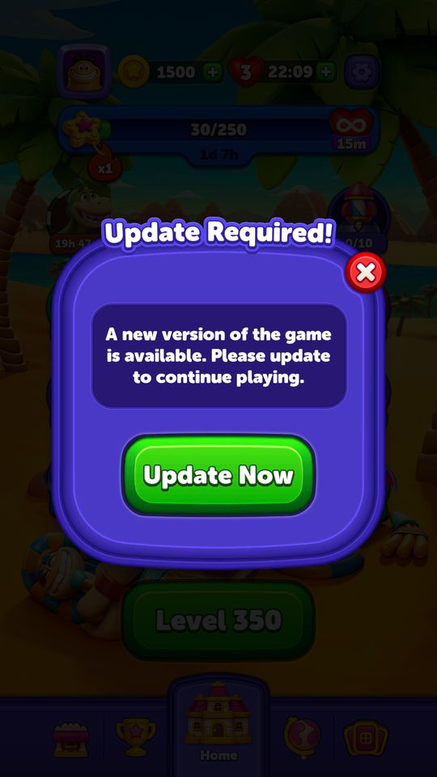

Sale & event — phân tích sâu
Đi sâu vào cơ chế phía sau các popup bán hàng và sự kiện của Block Out: thứ tự điều phối popup, chỗ icon trên Home, hệ số độ khó, chuỗi giữ chân khi bỏ cuộc, kinh tế ở điểm kẹt, giá theo phân khúc, cấu hình quảng cáo, và những gì lộ ra khi ép bật các tính năng server đang tắt.
- Nguồn: code IL2CPP đã dịch ngược (tên lớp/hàm ghi trong ngoặc), config cache trên máy (Firebase kéo ngày 22/09/2026,
template_version_number_key = 1393, không có A/B), config backend (GrandCached*), và buổi chơi thử 07/10/2026 trên LDPlayer. - Mỗi mục có Tóm lại ở đầu; phần chi tiết dành cho người cần tra số.
- Giá VND là giá Google Play hiện trong game cho tài khoản Việt Nam; giá USD là
dollarEquivalenttrong config.
Điều kiện buổi chụp (cần nhớ khi đọc ảnh):
- Tài khoản thử: segment
non-purchaser, chưa nạp tiền, chơi từ level 320 tới 350. Coin khoảng 1.000.000 và mỗi booster 999 là do đã sửa từ trước, không phải số của người chơi thật. - Bố cục màn 320–349 (bộ màn mới
t234server vừa đẩy) được thay tạm bằng bố cục màn 1 (3 khối) để thắng nhanh, rồi trả lại. Thời gian, độ khó và nhãn Hard / Super Hard vẫn là của màn thật. Màn 350 là bố cục thật. - Trong lúc chụp đã tạm tắt: giới hạn popup (
PopUpLimitConfigModel), chơi liền màn (ContinuousLevelsConfigModel, không có tác dụng ở level ≥ 10) và config quảng cáo backend (AdConfigModelFromBackend, tắt từ màn 322; màn 321 vẫn còn quảng cáo). Vì vậy chuỗi popup về Home trong ảnh dài hơn người chơi thật thấy. Người chơi thật: tối đa 2 popup tự mở mỗi lần về Home, 3 popup mỗi đầu phiên. - Ép bật tạm rồi khôi phục: Special Offer (Adaptive), Paw Touch Offer, Treasure Drill, Web Shop,
AppUpdate.ForceUpdate. - Bản cài từ Google Play nên bảng thanh toán thật có hiện ra. Mọi giao dịch đều đã hủy, không có khoản nào bị trừ tiền.
Bảng tên trong game và tên trong code:
| Trong game | Trong code | Trong game | Trong code | |
|---|---|---|---|---|
| Star Blaze | GAE | Super Rocket | LightBall / SuperRocket* | |
| Lily Leap | SkyJumpWithStage | Supply Box | Butler / SupplyBox* | |
| Rocket Race | JetpackRaceWithStage | Block Pass | MagicPass* | |
| UFO Rise | UfoRise | Dragon Treasure | TreasureDrill | |
| Streak Race | StreakTournament | Daily Gift | DailyReward | |
| Mission Carnival | MagicLab | Masters Arena / Block League | Arena | |
| Add Time (hết giờ) | PlayOn | Weekly | WeeklyTournament |
1. Điều phối popup khi về Home
Tóm lại: thứ tự popup nằm cứng trong code: 27 lệnh khi về Home sau màn thắng, chỉ 3 lệnh sau màn thua, 19 lệnh khi mở app. Server chỉ chỉnh được trần số popup (2 khi về Home, 3 khi mở app) và cờ bật/tắt trần; popup luật chơi, kích hoạt và kết thúc kỳ được vượt trần.
1.1 Cơ chế (ReturnToHomeSequenceService)
- Thắng màn thì
LevelWin()đặt_isLevelWin = true; thua hoặc thoát thìLevelLoseOrQuit()đặtfalse.SelectReturnToHomeSequence()chọn danh sách WIN hoặc LOSE theo cờ này. - Hai danh sách "daily" (
_dailyWinSequenceCommands = [OpenHomePageCommand],_dailyLoseSequenceCommands = []) không bao giờ được chọn. Đây là code chết từ chế độ daily level của Magic Sort (suy luận). - Mỗi lệnh có 3 cờ:
IsShowPopup(có tính vào trần không),ShouldShowForce(vượt trần),ShouldTerminateTheFlow(dừng cả chuỗi sau khi hiện). - Luật chặn (
<ExecuteAsync>d__17):- Trần lấy từ
PopUpLimitConfigModel.HomeReturnPopupShowLimit= 2. - Lệnh chạy nếu giới hạn đang tắt, hoặc số popup đã hiện còn dưới 2. Quá 2 thì chỉ lệnh
ShouldShowForce = trueđược chạy. - Sau mỗi lệnh: nếu
IsShowPopup && IsShowedthì đếm +1. Lệnh force cóIsShowPopup = 1vẫn bị đếm, nên vẫn ăn chỗ của popup thường phía sau.
- Trần lấy từ
- Người chơi bấm Play thì chuỗi bị hủy (
LevelEntrancePopupShown→CancelSequence). Khi các lệnh còn lại đều có thể bỏ qua, game mở khóa riêng nút Play cho bấm sớm (EnableInputSignalForOnlyPlayButton), trừ khi người chơi đang đứng ở level tối đa 1.000 ngoài Arena.
Khóa (popUpLimitConfigModel, cache = Firebase = mặc định client) | Giá trị |
|---|---|
isHomeReturnPopupShowLimitEnabled | true |
homeReturnPopupShowLimit | 2 |
isSessionStartPopupShowLimitEnabled | true |
sessionStartPopUpShowLimit | 3 |
1.2 Chuỗi WIN — 27 lệnh theo đúng thứ tự Initialize()
Loại lệnh:
- Hiệu ứng:
IsShowPopup = 0, force. Không tính vào trần, luôn chạy. - Bắt buộc:
IsShowPopup = 1, force. Vượt trần nhưng vẫn bị đếm. - Thường:
IsShowPopup = 1, không force. Bị trần chặn.
| # | Lệnh | Tính năng | Loại | Dừng chuỗi khi |
|---|---|---|---|---|
| 1 | InitializeReturnToHomeCommand | dựng Home, tải bảng xếp hạng | Hiệu ứng | – |
| 2 | TryShowSkyJumpWithStageStepIncreasedOnLobbyReturnCommand | Lily Leap tăng bậc | Thường | – |
| 3 | TryPlayGaeTutorialCommand | Star Blaze, luật lần đầu | Hiệu ứng | – |
| 4 | TryPlayGaeProgressBarAnimationOnLobbyReturnCommand | Star Blaze, thanh sao | Hiệu ứng | – |
| 5 | GiveRegularCoinRewardsCommand | coin thắng màn | Hiệu ứng | – |
| 6 | PlayJourneyAnimationsCommand | Journey | Hiệu ứng | – |
| 7 | TryPlayLobbyButtonsCollectibleAnimationsCommand | điểm bay vào icon | Hiệu ứng | – |
| 8 | ShowSuperRocketTutorialReturnToHomeCommand | Super Rocket, luật | Bắt buộc | đang là tutorial |
| 9 | TryShowSuperRocketActivatedCommand | Super Rocket kích hoạt | Hiệu ứng | có hiện |
| 10 | TryShowCollectionActivationCommand | Collection mở | Bắt buộc (đếm tùy _IsShowPopup) | có hiện |
| 11 | TryShowForceNameChangeCommand | ép đổi tên | Bắt buộc | có hiện |
| 12 | TryGiveGiftsCommand | Gift màn 10 | Hiệu ứng | – |
| 13 | TryShowUfoRiseCommand | UFO Rise | Thường | có hiện, khi trần tắt |
| 14 | TryShowTreasureDrillCommand | Dragon Treasure | Thường | – |
| 15 | TryShowSkyJumpWithStageResultOnLobbyReturn | Lily Leap kết quả | Thường | – |
| 16 | TryShowJetpackRaceWithStagePopUpOnLobbyReturnCommand | Rocket Race | Thường | có hiện, khi trần tắt |
| 17 | TryToShowSpecialOfferHomeReturnCommand | Special Offer | Thường | có hiện, khi trần tắt |
| 18 | TryShowDailyRewardCommand | Daily Gift | Thường | – |
| 19 | TryShowDailyRewardBulkGiveAnimationCommand | Daily Gift trao gộp | Hiệu ứng | – |
| 20 | TryShowRateUsCommand | Rate Us | Hiệu ứng | – |
| 21 | TryShowMagicPassTutorialCommand | Block Pass, luật | Bắt buộc | – |
| 22 | TryShowMagicPassFinishedCommand | Block Pass hết kỳ | Bắt buộc | – |
| 23 | TryOpenArenaLeaderboardPopUpReturnToHomeCommand | Arena | Bắt buộc | trạng thái Arena đổi |
| 24 | TryShowMagicLabCommand | Mission Carnival | Thường | – |
| 25 | TryOpenStreakTournamentPopupCommand | Streak Race | Thường | có hiện, khi trần tắt |
| 26 | TryShowSkyJumpWithStageJoinPopUpOnLobbyReturnCommand | Lily Leap Join | Thường | có hiện, khi trần tắt |
| 27 | TryShowWeeklyTournamentCommand | Weekly | Thường | có hiện |
Đếm lại: 10 lệnh hiệu ứng, 6 lệnh bắt buộc, 11 lệnh thường.
"Có hiện, khi trần tắt" là điều kiện !IsPopupLimitAbEnabled && IsShowed. Với config đang chạy (trần bật), 5 lệnh này không bao giờ dừng chuỗi. Khi trần tắt, popup đầu tiên trong nhóm UFO Rise / Rocket Race / Special Offer / Streak Race / Lily Leap Join sẽ dừng chuỗi. Tên IsPopupLimitAbEnabled cho thấy đây là hai nhánh A/B: một nhánh "tối đa 2 popup", một nhánh "dừng ở popup sự kiện đầu tiên" (suy luận).
TryShowStreakTournamentHatsCommand có trong code nhưng không được thêm vào danh sách nào.
1.3 Chuỗi LOSE — 3 lệnh
| # | Lệnh | Loại | Dừng chuỗi khi |
|---|---|---|---|
| 1 | TryOpenArenaClaimFailLevelReturnToHomeCommand | Bắt buộc | trạng thái Arena đổi |
| 2 | TryShowJetpackRaceWithStagePopUpOnLobbyReturnCommand | Thường | có hiện, khi trần tắt |
| 3 | TryShowMagicPassFinishedCommand | Bắt buộc | – |
Sau màn thua không có popup Star Blaze, UFO Rise, Streak Race, Daily Gift hay Special Offer. Không có offer nào tự bật khi về Home sau thua. Việc bán hàng lúc thua dồn hết vào popup trong màn (mục 4 và 5).
1.4 Đầu phiên (HomeWelcomingSequenceCommand) — 19 lệnh, trần 3
Đếm bằng IsShowed (interface đầu phiên không có IsShowPopup). Lệnh không force bị bỏ khi đã đủ 3 popup (cùng logic với chuỗi về Home, suy luận từ cột Force).
| # | Lệnh | Force |
|---|---|---|
| 1 | TryShowBannedCommand | 1 |
| 2 | TryShowAccountDeletionInProgressCommand | động (DeletionStatus - 1 < 2) |
| 3 | TryShowForceUpdateCommand | 1 |
| 4 | TryShowForceNameChangeCommand | 1 |
| 5 | TryShowPurchaseCompletedPopUpForNotRequestedInAppsCommand | 1 |
| 6 | CollectionThemeCompletedHomeWelcomingCommand | 1 |
| 7 | TryShowWebPurchaseCompletedCommand | động |
| 8 | TryOpenSoftUpdatePopupHomeWelcomingCommand (Arena) | 1 |
| 9 | TryShowCompensationHomeWelcomingCommand | 1 |
| 10 | TryOpenArenaLeaderboardHomeWelcomingCommand | 1 |
| 11 | ShowSuperRocketTutorialHomeWelcomingCommand | 1 |
| 12 | TryShowDailyRewardHomeWelcomingCommand | 1 (khi về Home là 0) |
| 13 | TryShowDailyRewardBulkGiveAnimationHomeWelcomingCommand | 1 |
| 14 | SpecialOfferHomeWelcomingCommand | 0 |
| 15 | TryShowSkyJumpWithStageHomeWelcomingCommand | 0 |
| 16 | StreakTournamentHomeWelcomingCommand | 0 |
| 17 | TryShowMagicPassFinishedHomeWelcomingCommand | 1 |
| 18 | UfoRiseHomeWelcomingCommand | 0 |
| 19 | WeeklyTournamentHomeWelcomingCommand | 0 |
JetpackRaceWithStageHomeWelcomingCommand tồn tại nhưng không được thêm vào danh sách: không có popup Rocket Race khi mở app.
1.5 Offer đứng ở đâu trong chuỗi
| Chuỗi | Special Offer | Dragon Treasure |
|---|---|---|
| Mở app | #14, là lệnh đầu tiên có Force = 0 cố định: chỉ đứng sau các popup hệ thống và Daily Gift | không có lệnh |
| Về Home sau thắng | #17, sau Lily Leap tăng bậc, UFO Rise, Dragon Treasure, Lily Leap kết quả, Rocket Race | #14, ngay sau UFO Rise |
| Về Home sau thua | không có | không có |
Hệ quả (suy luận): với trần 2, Special Offer khi về Home dễ bị cắt nếu đã có 2 popup sự kiện trước nó. Chỗ tốt nhất cho offer là đầu phiên. Cả hai offer đều tắt trên config live. Khi ép bật lúc chụp, Special Offer không ra popup (backend không gửi gói); Dragon Treasure có hiện luật lần đầu, nhưng ghi chú không nói nó hiện ở bước nào của chuỗi. Vì vậy vị trí của offer trong chuỗi chưa kiểm được trên máy.
1.6 Buổi chụp cho thấy gì
Trần popup đã tắt khi chụp nên chuỗi dài hơn thực tế. (Chơi liền màn cũng bị tắt, nhưng ở level 320+ cờ này không có tác dụng — xem cuối mục.) Thứ tự xuất hiện vẫn khớp code:
| Lúc | Popup thấy được, theo thứ tự ảnh | Lệnh tương ứng |
|---|---|---|
| Mở app (level 320) | Daily Gift chọn hộp, +300 coin → Block Pass hết kỳ → "Your Unclaimed Rewards!" tự trao 15 phút mạng | đầu phiên #12 → #17 |
| Về Home sau khi thua 320 | Rocket Race mời Start | LOSE #2 |
| Mở lại app sau khi rớt Lily Leap | Lily Leap "Challenge failed", chờ 24:59 → Streak Race lần đầu | đầu phiên #15 → #16 |
| Về Home sau khi thắng 320 | Star Blaze tutorial → "New Collection Started!" → mở gói thẻ → tự chuyển sang tab Collection | WIN #3 → #10 (dừng chuỗi) |
| Thắng 322 | thanh Star Blaze 5/10, x10 → Rocket Race "You lost the race!" | WIN #4 → #16 |
| Thắng 323 | Star Blaze vượt mốc → Mission Carnival phiên mới tự mở | WIN #4 → #24 |
| Thắng 324 | Star Blaze x100 → UFO Rise tự mở, nhận rương mốc 5 | WIN #4 → #13 |
Ở màn 320, cả Star Blaze tutorial lẫn Collection mở đều là lệnh force. Người chơi thật có trần 2 vẫn thấy đủ chuỗi này (suy luận).
Lưu ý khi đọc ảnh: trần được tắt bằng cờ IsHomeReturnPopupShowLimitEnabled = false (capture-plan.md). IsPopupLimitAbEnabled đọc đúng cờ này, nên lúc chụp game chạy nhánh "dừng ở popup sự kiện đầu tiên". Ảnh khớp nhánh đó: sau Rocket Race (thắng 322) và UFO Rise (thắng 324) không có popup nào khác được chụp (suy luận). Ảnh vì vậy không cho thấy trần 2 cắt popup như thế nào.
Popup thắng màn chỉ gắn 1 banner sự kiện. Khi Rocket Race, Lily Leap, UFO Rise và Streak Race cùng chạy, banner là Rocket Race. Khi Rocket Race đang chờ chặng mới, banner chuyển sang UFO Rise.
Chơi liền màn (ContinuousLevelsConfigModel, live: bật, Level = 10): Code LevelWinContinueButton.OnButtonClicked: khi cờ bật và LevelProgress < ContinuousLevelsConfigModel.Level (10) thì gọi ContinuousLevelInitState (vào thẳng màn kế); ngược lại về Home. Tức chơi liền màn chỉ áp dụng cho 9 màn đầu. Người chơi từ level 10 trở lên luôn về Home sau mỗi màn thắng, nên chuỗi popup về Home chạy với mọi người chơi đã qua màn 9. Việc tắt cờ này lúc chụp không làm thay đổi gì ở level 320+ (ghi chú buổi chụp ban đầu hiểu ngược và đã được sửa).


2. Chỗ icon trên Home
Tóm lại: mỗi cột có đúng 5 ô cho đúng 5 tính năng, nên không tính năng nào bị mất icon như ở Magic Sort. Thứ tự ưu tiên chỉ quyết định icon nằm cao hay thấp. Offer trả tiền luôn ở đáy cột phải.
Cơ chế (LobbyEventsPositionManager, scene HomeScene):
- 5 ô trái, 5 ô phải. Ô p1 trên cùng; tọa độ y của p1..p5 là −1.40 / −3.71 / −6.02 / −8.33 / −10.64.
- Mỗi khi trạng thái một icon đổi,
RepositionButtonsduyệt danh sách theo thứ tự và dồn các icon đang hiện lên trên. - Khi thanh Star Blaze hiện (
GaeControlleractive, trạng tháiInProgress 3hoặcAllStepsClaimed 7), cả hai cột hạ từ y = 6.5 xuống y = 4.9 để nhường chỗ.
| Ưu tiên | Cột trái (_leftButtons) | Mở từ level | Cột phải (_rightButtons) | Mở từ level |
|---|---|---|---|---|
| 1 | Masters Arena | > 999 | Super Rocket | 200 |
| 2 | Streak Race | 25 | Block Pass | 50 |
| 3 | Lily Leap | 40 | Mission Carnival | 100 |
| 4 | UFO Rise | 60 | Dragon Treasure (đang tắt) | 110 |
| 5 | Rocket Race | 80 | Special Offer (đang tắt; 3 chủ đề Cart Craze / Surf Sale / Ocean Riches) | 55 |
Không nằm trong ô: thanh Star Blaze (giữa Home), Weekly (tab Leaderboard), Collection và Journey (trang vuốt riêng), Daily Gift (trong Shop, có chấm báo ở icon Shop). Paw Touch và Web Shop không có icon: chúng chỉ hiện trong popup.
Buổi chụp xác nhận việc dồn ô:
- Lúc mở app: trái có Lily Leap (Join), UFO Rise (Finished), Rocket Race (Join) ở p1–p3; phải có Super Rocket 0/10 và Mission Carnival (Finished). Block Pass chưa có nên Mission Carnival dồn lên p2.
- Sau chuỗi mở app: Block Pass chen vào cột phải ở p2.
- Xem xong UFO Rise đã kết thúc thì icon của nó biến mất; theo cơ chế dồn ô, Rocket Race lên thay chỗ.
- Khi Streak Race xuất hiện: nó chiếm p1 trái, đẩy Lily Leap, UFO Rise, Rocket Race xuống p2–p4.
- Sau khi thắng 320: thanh Star Blaze hiện và đẩy cả hai cột xuống.
- Ép bật Dragon Treasure: icon rồng vào đúng ô 4 cột phải.
Hệ quả cho offer:
- Không có cạnh tranh ô. Dù tuần nào nhiều sự kiện, Dragon Treasure và Special Offer vẫn có icon khi được bật. Magic Sort thì khác: 11 tính năng tranh 5 ô phải, offer hay mất icon.
- Cái giá là vị trí: offer luôn nằm thấp nhất cột phải, dưới 3 tính năng miễn phí. Khi thanh Star Blaze hiện, hai ô đáy bị đẩy xuống thêm.
- Block Pass, gói trả tiền duy nhất đang bán ngoài Shop, đứng p2 phải, chỉ sau Super Rocket.


3. Hệ số độ khó
Tóm lại: nhãn "Rewards x3 / x5" trên nút Play chỉ khớp với coin, chìa Block Pass và điểm Arena. Mission Carnival chỉ đếm số màn Hard / Super Hard đã thắng (+1), không nhân. Các sự kiện chuỗi thắng (Star Blaze, Streak Race, UFO Rise, Rocket Race, Lily Leap) và Weekly không nhân theo độ khó; Star Blaze và Streak Race có hệ số riêng theo chuỗi thắng x1 → x100.
Phân bố độ khó (bảng màn backend trong cache 22/09, 999 màn): Hard là các màn tận cùng bằng 4 (14, 24, …, 994), Super Hard là các màn tận cùng bằng 9 (19, …, 999), mỗi loại 99 màn; còn lại 801 màn thường. Bộ màn mới t234 server đẩy lúc chụp (GrandCachedRemoteLevelConfigs.now, 02-10-26-regular-keycurtain-v234-v1) có 1.049 màn, 104 Hard và 104 Super Hard, cùng quy luật đuôi 4 / đuôi 9. Trên máy thấy đúng Hard 324 và Super Hard 329.
| Đại lượng | Thường | Hard | Super Hard | Nguồn |
|---|---|---|---|---|
| Coin thắng màn | 20 | 60 | 100 | AdConfigModel.GetLevelWinCoinRewardByDifficulty (backend = Firebase = client) |
| Nhãn trên nút Play | x1 | x3 | x5 | hardLevelMultiplier 3, superHardLevelMultiplier 5 |
| Chìa Block Pass | 1 | 3 | 5 | blockPassConfigModel |
| Điểm Arena | 1 | 3 | 5 | ArenaService.EarnCollectable |
| Mission Carnival | – | +1 nhiệm vụ Hard (5 chặng hiện tại không có nhiệm vụ này) | +1 nhiệm vụ Super Hard | WinState.Enter; chặng trong cache chỉ có 4 loại: Super Hard, thắng Rocket Race, bậc Star Blaze, bậc UFO Rise |
| Coin x2 xem quảng cáo (đang tắt) | 40 | 120 | 200 | backend (Firebase ghi 100 / 200 / 300) |
Không nhân theo độ khó (+1 mỗi màn thắng): Weekly, Lily Leap, Rocket Race, UFO Rise, Super Rocket, Supply Box (min(+1, 3)). Dragon Treasure cũng +1 nhưng chưa kiểm chứng.
Nhãn x3 / x5 thật ra làm gì. GetLevelMultiplierByDifficulty chỉ được gọi ở 2 chỗ giao diện: PlayButtonMultiplierTextView (chữ "x{0}") và PlayButtonContainer.PlayButtonChangeAnimation. Nó không nhân điểm sự kiện nào. Con số x3 / x5 trùng tỉ lệ coin 60/20 và 100/20, trùng chìa Block Pass và điểm Arena, nên nhãn đúng với các thứ đó, nhưng dễ khiến người chơi nghĩ mọi sự kiện đều x3 / x5.
Hệ số chuỗi thắng (Star Blaze, Streak Race). Cả hai dùng thang [1, 5, 10, 25, 100]. Thắng màn cộng điểm theo hệ số hiện tại rồi tăng 1 bậc, tối đa bậc 5 (x100). Thua thì về x1.
Số liệu trên ảnh khớp đúng thang này, không có nhân độ khó (tính từ ảnh):
| Màn thắng | Độ khó | Hệ số trước khi thắng | Sao Star Blaze cộng | Thanh sau khi thắng |
|---|---|---|---|---|
| 321 | thường | x1 | 1 | đạt mốc 1, thanh 0/10, lên x5 |
| 322 | thường | x5 | 5 | 5/10, lên x10 |
| 323 | thường | x10 | 10 | vượt mốc 10 sao (gói thẻ), còn 5/300, lên x25 |
| 324 | Hard | x25 | 25 | 30/300, lên x100 |
| 325–327 | thường | x100 | 100 mỗi màn | vượt mốc 300 (pháo băng), còn 30/400 |
Ảnh sau màn 324 có chú thích gốc "màn Hard được cộng nhiều sao". Thực ra 25 sao là do hệ số chuỗi x25, không do Hard.
Streak Race: sau 11 màn thắng liên tiếp có 741 cờ = 1 + 5 + 10 + 25 + 7 × 100 (tính toán). Theo thứ tự ảnh, 11 màn này gồm cả Hard 324 và Super Hard 329 (suy luận), mà tổng vẫn đúng công thức không nhân độ khó. 741 cờ lúc đó chỉ đứng hạng 3 (hạng 1 có 798).
Quy ra 10 màn (8 thường + 1 Hard + 1 Super Hard): 320 coin và 16 chìa Block Pass (tính toán trong events.md). Đi hết 1.014 chìa của Block Pass cần khoảng 634 màn trong 30 ngày (suy luận).


4. Chuỗi giữ chân khi bỏ cuộc
Tóm lại: bỏ cuộc mở popup "Continue?" nêu thứ sắp mất, theo 7 mức ưu tiên cố định, nhưng tối đa 2 cảnh báo. Cảnh báo "mất 1 mạng" đứng cuối nên bị đẩy ra khi đã có 2 sự kiện. Ở nhánh kẹt rồi bỏ cuộc, dưới mỗi popup giữ chân có banner Block Pass mời Play On miễn phí.
Hai đường bỏ cuộc (economy.md §6):
- Kẹt → bỏ cuộc:
PreStuckPopUp→StuckPopup("Out Of Time", Add Time hoặc X) → X →StuckAreYouSurePopup(Play On cùng giá, tối đa 2 cảnh báo, carousel offer) → hiệu ứng tụt tiến độ sự kiện →TryAgainPopup. - Pause → Quit:
LevelPausePopup→QuitAreYouSurePopup→ "Level Failed!".
Cả hai popup dùng chung 7 container, sắp theo _priority tăng dần, dừng sau _maxShowContainerCount = 2 container có ShouldShow() = true:
| Ưu tiên | Cảnh báo | Hiện khi |
|---|---|---|
| 1 | Super Rocket / Supply Box | Super Rocket đầy (Eligible) hoặc Supply Box có chuỗi > 0 |
| 2 | Lily Leap "lose your streak" | đang đua và Score ≥ 0, tức kể cả khi 0/5 |
| 3 | UFO Rise | có tiến độ trên checkpoint sẽ rơi mất |
| 4 | Rocket Race | đang đua và Score ≥ 1 |
| 5 | Star Blaze | hệ số đang trên x1 |
| 6 | Streak Race | chuỗi > 1 |
| 7 | Mất 1 mạng | thân hàm không đọc được; suy luận là luôn true (chưa kiểm chứng) |
Ba chuỗi ghi nhận khi chơi:
| Tình huống | Popup lần lượt |
|---|---|
| Level 320, đang đua Lily Leap 0/5, chưa có sự kiện khác có tiến độ (suy luận theo thứ tự ảnh) | "Continue? You will lose your streak!" (Lily Leap 0/5, Play On 1.900) → "Continue? You will lose 1 life!" (Play On 1.900) → "Lily Leap — You failed the challenge" → "Level 320 — Level Failed!" + Try Again |
| Đang có Super Rocket, Supply Box, Lily Leap 4/5, Streak Race đang chuỗi | "You will lose your Super Rocket and Supply Box!" (Play On 900) → "You will lose your streak!" (Lily Leap 4/5) → rớt Lily Leap → "Level Failed!" (Supply Box về 0, banner Streak Race tụt x1) → Home còn 4 mạng, Star Blaze x1, Super Rocket 0/10 |
| Level 350, Pause → Quit; ảnh sau đó cho thấy Supply Box trống, Streak Race x1 (không còn chuỗi nào là suy luận) | "Are You Sure? You will lose 1 life!" (nút Quit đỏ, không có Play On) → "Level 350 — Level Failed!" |
Chuỗi thứ hai xác nhận giới hạn 2: Streak Race có chuỗi để mất (banner tụt về x1) nhưng không được cảnh báo, và cảnh báo mất mạng cũng bị đẩy ra. Star Blaze nhiều khả năng cũng đang trên x1 vì chưa thua từ màn 320 (suy luận). Mạng vẫn bị trừ (Home còn 4 mạng); theo code, mạng bị trừ ngay lúc vào màn (LevelInit.Enter), không phải lúc bỏ cuộc.
Giá Play On trong popup giữ chân là giá bậc hiện tại của màn: 1.900 ở ví dụ đầu vì đã dùng Add Time 900 một lần trong màn 320.
Banner Block Pass nằm ngay dưới popup giữ chân: "Free Play On for this level!" + 8 mạng, nút Activate. Đây là quyền lợi IsPlayOnActive của pass đã mua: Play On miễn phí không đẩy bậc giá. Hạn mức chính xác (mỗi màn hay mỗi kỳ) chưa kiểm chứng.
So với Magic Sort (theo bài cùng loạt):
| Magic Sort | Block Out | |
|---|---|---|
| Số cảnh báo | Quit ghi nhận 3 cảnh báo (mạng, hạng, chuỗi) | tối đa 2 (_maxShowContainerCount = 2) |
| Cảnh báo mất mạng | đứng đầu khi Quit | đứng cuối, bị đẩy ra khi đã có 2 sự kiện |
| Play On ở popup giữ chân | 900 coin trong cả 5 lần ghi nhận (đều là lần kẹt đầu) | giá bậc hiện tại (thấy 900 và 1.900); nhánh Quit không có Play On |
| Offer kèm theo | Paw Touch trong popup kẹt; Ego offer đang tắt | banner Block Pass; Paw Touch đang tắt |


5. Kinh tế điểm kẹt
Tóm lại: Block Out chỉ thua theo 2 cách: hết giờ hoặc bom nổ. Chỗ kẹt bán bằng coin là chính: Add Time 900 → 1.900 → 2.900 coin, booster mua lẻ, Refill 900 coin. Play On bằng quảng cáo và Paw Touch đang tắt. Lời mời trả tiền thật duy nhất ngay trên popup là banner Block Pass; thiếu coin thì game mở Shop.
5.1 Lý do thua
LevelWinLoseReason:NoTime = 2,Bomb = 3. Không có lý do "hết chỗ".StuckPopupTypecóNoSpace = 1nhưng không lý do thua nào dẫn tới nó. Đây là phần thừa từ Magic Sort (suy luận); việc nó có hiện ở màn có máy sinh khối hay không chưa kiểm chứng.- Hết giờ: popup "Out Of Time" ghi "+30 Sec". Bom: popup hiện hình bom, Play On cộng thời gian cho bom.
- Buổi chụp chỉ ghi được nhánh hết giờ, không có ảnh thua vì bom.
5.2 Thang Add Time (Play On)
| Lần trong cùng màn | Backend GrandCachedPlayOnConfig (đang dùng) | Firebase playOnConfigModel | Mặc định client |
|---|---|---|---|
| 1 | 900 coin, +30 giây, bom +30 giây | 900 / +30 / +30 | 900 / +30 / bom +15 |
| 2 | 1.900 coin | 900 | – |
| 3 trở đi | 2.900 coin (kẹp ở bậc cuối) | 900 | – |
- Backend thắng vì
playOnConfigModelFromBackend = {isEnabled true, configType 1}. Nếu backend trảIsNotAvailable, game xóa cache và quay về bản Firebase 900 / 900 / 900. Firebase.GameEconomyModelcòn ghiPlayOnPrice 900 / 1900 / 2300, nhưng lớp C# không có các trường này nên client bỏ qua.- Bậc đếm theo màn (
LevelStats._playOnUsage). Buổi chụp thấy 900 rồi 1.900 trong cùng màn 320, đúng thang backend. isFirstPlayOnFree = false. Play On miễn phí chỉ đến từ Block Pass đã mua, và lượt miễn phí không đẩy bậc giá.- Không đủ coin thì mở Shop (
StorePopUpSource.PlayOn = 3). - Quy đổi (
economy.md): 900 coin ≈ 45 màn thường, ≈ 1,79 USD theo gói 1.000 coin; 2.900 coin ≈ 145 màn thường.
5.3 Play On bằng quảng cáo — tắt
Backend để playOnWithRewardedEnabled false, firstLevelToShowPlayOnWithRewarded 0, dailyPlayOnCount 0, consecutiveRewardedLimit 0, rewardedPlayOnModels []. Code đã có đủ điều kiện (hạn mức theo ngày, giới hạn liên tiếp, số quảng cáo cần xem) nhưng chưa bật. Người chưa nạp tiền kẹt màn chỉ có lựa chọn trả coin hoặc bỏ cuộc.
5.4 Paw Touch Offer — tắt, ép bật không ra gói
Tham số (pawTouchOfferConfig) | Giá trị |
|---|---|
isEnable | false |
| Mở từ level | 59 |
| Chỉ chào khi coin dưới | 2.000 (maxCoinAmountToShow; code kiểm DoesEnoughVisibleCurrency(Coin, 2000), kiểm chứng một phần) |
| Mỗi lần chào sống | 1.800 giây |
| Sản phẩm | block.voyage1 / 3 / 10 / 20 / 50 = 0,99 / 2,99 / 9,99 / 19,99 / 49,99 USD |
| Quà dự phòng | 100 coin + 15 phút mạng |
Khi chụp: ép bật cờ và hạ coin xuống 1.500, popup Out Of Time vẫn không có gói Paw Touch, vì backend không phát gói cho tài khoản thử.
5.5 Booster, mạng và banner Block Pass
| Điểm tiêu | Giá | Ghi chú |
|---|---|---|
| Time Freeze trong màn (hết hàng) | 300 coin | đóng băng đồng hồ 10 giây |
| Rocket trong màn | 600 coin | phá 1 khối |
| UFO trong màn | 1.200 coin | hút mọi khối 1 màu |
| Pre-Booster Rocket | 1.800 coin / 3 cái | trước màn, từ level 12 |
| Pre-Booster đồng hồ | 900 coin / 3 cái | mỗi cái +10 giây |
| Refill mạng ("More Lives") | 900 coin | buổi chụp: từ 0 mạng lên "5 Full" |
| +1 mạng xem quảng cáo | miễn phí | backend bật từ level 50; không thấy khi chụp vì đã tắt config quảng cáo backend |
Hết booster thì nút hiện giá coin và bấm là trừ coin dùng luôn (BoosterManager.TryUseBooster); không đủ coin thì mở Shop.
Banner Block Pass xuất hiện ở hai điểm đau:
- Popup giữ chân khi bỏ cuộc: "Free Play On for this level!" + 8 mạng.
- Popup "More Lives": "5 → 8 Unlock Special Rewards!".
Code có sẵn nguồn kích hoạt pass tương ứng (MagicPassActivationSource: Refill = 2, Stuck = 3). Block Pass 263.000 ₫ (9,99 USD) cho nhánh trả phí 5.500 coin + 5 UFO + 13 Rocket + 13 Time Freeze + 24,5 giờ mạng, cộng két Bonus Vault tối đa 5.000 coin (cần thêm 1.000 chìa). Quy đổi booster ra coin thì được 2.322 coin/USD, cao nhất trong các gói đã tính (iap.md, chưa tính vault và mạng).


6. Giá theo phân khúc người chơi
Tóm lại: backend xếp người chơi vào 5 phân khúc theo mức chi tiêu. Dragon Treasure có bảng giá cố định theo phân khúc trong config; Special Offer và Paw Touch để backend chọn gói. Shop và quảng cáo không dùng phân khúc.
Phân khúc: non-purchaser, poor, hamsi, dolphin, whale.
- Backend gán, client chỉ lưu (
SegmentService.FetchSegment→SegmentDataModelV2). - Lấy lại khi mở app, khi đồng bộ dữ liệu, và sau mỗi lần mua IAP. Suy luận: mua xong thì backend có thể xếp lại phân khúc.
- Tiêu chí xếp phân khúc không có trong client (chưa kiểm chứng).
- Tài khoản thử:
non-purchaser,inAppCount 0.
| Tính năng | non-purchaser | poor | hamsi | dolphin | whale | Trạng thái |
|---|---|---|---|---|---|---|
Dragon Treasure (segmentedIAPModel) | block.dragontreasure2 2 USD | …5 5 USD | …10 10 USD | …15 15 USD | …25 25 USD | tắt |
| Special Offer | backend chọn trong block.special1 / 5 / 10 / 20 / 50 (0,99 / 4,99 / 9,99 / 19,99 / 49,99 USD) | tắt | ||||
| Paw Touch | backend chọn trong block.voyage1 / 3 / 10 / 20 / 50 (0,99 / 2,99 / 9,99 / 19,99 / 49,99 USD) | tắt |
- Dragon Treasure ép bật trên tài khoản
non-purchaserhiện đúng 52.000 ₫ (sản phẩm Google Play "Dragon Treasure 2"). 52.000 ₫ cũng là giá Starter Bundle 1,99 USD. - Special Offer và Paw Touch nhận gói qua
SegmentedOfferPackage {IapProductId, IapDiscountAmount, Rewards}. Phần giảm giá và nội dung gói đều do backend gửi. Việc phân khúc nào nhận SKU nào là suy luận, vì cả hai đang tắt nên chưa bắt được gói thật. - Khi không tra được gói, client trao quà dự phòng cố định, không phụ thuộc giá: Special Offer 100 coin + 15 phút mạng + 1 UFO + 1 Rocket + 1 Time Freeze; Paw Touch 100 coin + 15 phút mạng. Mua gói 49,99 USD mà rơi vào nhánh này cũng chỉ nhận đúng chừng đó.
- Nội dung các sự kiện (Daily Gift, Block Pass, Mission Carnival, Collection, Star Blaze) cũng do backend chọn theo phân khúc; mọi cache trên máy đều ghi
non-purchaser. - Không dùng phân khúc:
- Shop: một bảng giá chung. Shop chỉ cá nhân hóa theo lịch sử mua (
MaxPurchasedBundleIndexđẩy phần xem trước lên gói cao hơn). - Quảng cáo: chia theo CPM và nguồn cài đặt (mục 7).
- Bảng màn:
userLevelSegment = "default".
- Shop: một bảng giá chung. Shop chỉ cá nhân hóa theo lịch sử mua (
- Config chết từ Magic Sort còn trong Firebase:
MiniGameOfferConfigModelcó bảng giá theo phân khúcsort.underwater1..5(0,99 → 4,99 USD), nhưng client không có lớp đọc.
Giá VND thấy trong game và USD trong config:
| Gói | VND | USD |
|---|---|---|
Starter Bundle -90% (block.starterbundle2) | 52.000 | 1,99 |
Dragon Treasure non-purchaser (block.dragontreasure2) | 52.000 | 2,00 |
Block Pass (block.blockpass10) | 263.000 | 9,99 |
Gói coin nhỏ nhất 1.000 coin (block.coins2) | 52.000 | 1,99 |
Gói coin 10.000 coin (block.coins15) | 395.000 | 14,99 |


7. Quảng cáo
Tóm lại: config quảng cáo backend thay toàn bộ bản Firebase. Bản đang chạy bật quảng cáo xen kẽ từ level 70, cách nhau ít nhất 240 giây, ở 3 vị trí; rewarded chỉ dùng cho +1 mạng từ level 50. Bản Firebase tắt hết quảng cáo, nên nếu backend không trả config thì game không có quảng cáo.
Bản nào thắng (AdConfigService.GetAdConfigModel):
- Dùng bản backend khi bản này có và
AdConfigModelFromBackend.isEnabled = true(configType 26). - Bản backend thay cả model, không trộn từng trường.
- Request gửi kèm CPM và nguồn cài đặt. Máy thử có
firstCpmAsDollar = lastCpmAsDollar = 3.43, attributionOrganic. Ý nghĩa củaconfigType 26(thuộc nhóm CPM nào) chưa rõ. - Config được làm mới mỗi lần một quảng cáo xen kẽ tải xong.
| Trường | Mặc định client | Firebase | Backend (đang dùng) |
|---|---|---|---|
isMaxSdkEnabled | false | false | true |
isInterEnabled | true | false | true |
firstLevelToShowInter | 10 | 10 | 70 (cache 15/09: 10000) |
interShowFrequencyInSeconds | 240 | 240 | 240 |
adShowPlacesForInter | [1,2,3,4,5] | [1,2,3,4,5] | [1,2,3] = EarlyWin, LateWin, Retry |
isInterResetAfterRewardedActive | true | false | true |
isLifeRewardedEnabled | true | false | true |
firstLevelToShowLifeRewarded | 10 | 10 | 50 |
is2xRewardedEnabled | true | false | false |
| Coin x2 Thường / Hard / Super Hard | 100 / 200 / 300 | 100 / 200 / 300 | 40 / 120 / 200 |
| Coin thắng màn | 20 / 60 / 100 | 20 / 60 / 100 | 20 / 60 / 100 |
playOnWithRewardedEnabled | – | (cache false) | false |
Quảng cáo xen kẽ:
- Điều kiện theo thứ tự trong code:
1. Quảng cáo đã tải xong. 2. Chưa mua gói No Ads. 3. Cờ inter bật. 4. LevelProgress ≥ 70. 5. Đã qua 240 giây từ lần trước. 6. Vị trí nằm trong danh sách cho phép.
- Vị trí gọi:
- Ngay sau khi thắng (
LevelCongratsPopUp, EarlyWin). - Bấm Continue hoặc đóng màn thắng (LateWin).
- Chơi lại sau khi thua (
InLevelPlayButton, Retry).
- Ngay sau khi thắng (
- Xem rewarded xong thì đồng hồ inter đặt lại: người vừa xem rewarded không bị inter trong 240 giây.
- Ngày 15/09 mốc là 10000 (coi như tắt). Đến bản 22/09 hạ xuống 70, tức quảng cáo xen kẽ vừa được bật lại.
Rewarded: chỉ nhánh +1 mạng (OneLifeRewarded, nút trong popup Refill) đang bật. Nhân đôi coin và Play On bằng quảng cáo đều tắt. Code không có banner.
No Ads: không có SKU riêng. 5 gói Bundle trong Shop (Brick 131.000 ₫ → Ultimate 2.650.000 ₫) có shouldCloseAds = true; Starter Bundle và gói coin thì không. Cờ này chỉ chặn quảng cáo xen kẽ. economy.md đọc code thấy rewarded không kiểm cờ No Ads; iap.md ghi điểm này chưa kiểm chứng.
Buổi chụp:
- Thắng level 321 khi config backend còn bật: quảng cáo xen kẽ AppLovin (video) hiện ngay sau màn thắng. Ghi chú buổi chụp chỉ ghi lần inter này. Thời điểm khớp vị trí EarlyWin (suy luận).
- Sau video là quảng cáo chơi thử (playable) không có nút đóng trên máy ảo. Phải tắt app; màn đã thắng vẫn được tính.
- Tắt config backend thì game dùng bản Firebase: màn 322 không có inter, popup "More Lives" không có nút xem quảng cáo. Điều này xác nhận trên máy rằng bản backend quyết định toàn bộ quảng cáo.


8. Tính năng đang tắt với tài khoản thử và kết quả khi ép bật
Tóm lại: client đã có đủ 4 kênh bán hàng đang tắt. Ép bật trên máy thì Dragon Treasure ra gói thật từ backend (52.000 ₫ cho tối đa 10.000 coin) và Web Shop hiện được hộp chọn kênh thanh toán. Special Offer và Paw Touch không ra gì vì backend không gửi gói. Masters Arena chỉ mở khi qua level 999 nên không chụp.
| Tính năng | Cờ live | Ép bật thấy gì |
|---|---|---|
Dragon Treasure (treasureDrillConfigModel) | isEnabled false, mở từ 110 | Backend gửi gói thật; icon rồng ở ô 4 cột phải; luật lần đầu; bảng mốc; nút Activate 52.000 VND; Google Play hiện "Dragon Treasure 2" 52.000 ₫ (đã hủy) |
Web Shop (webShopConfigModel) | isEnabled false, mở từ 300 (mặc định client 5000) | Bấm giá hiện "Choose Payment": Pay In-App 52.000 VND (No Extra Bonus) hoặc Pay On-Web 1,99 USD + BONUS 500 coin, nhãn Secure Payment. Không bấm thanh toán web |
Special Offer (adaptiveSpecialOfferConfigModel) | isEnable false, mở từ 55, showFrequency 2, maxShowCount 10 | Không có icon, không có popup: backend không gửi gói |
Paw Touch (pawTouchOfferConfig) | isEnable false, mở từ 59 | Coin 1.500 (< 2.000) mà popup Out Of Time vẫn không chèn gói |
Ép cập nhật (appUpdateConfigModel.forceUpdate) | false | "Update Required!" chặn vào game, chỉ còn nút Update Now |
Masters Arena (arenaConfigModel) | không có cờ bật/tắt | Không ép: khóa tới khi qua level 999 |
Dragon Treasure — gói thật từ backend:
- Ảnh
f_bootchụp lúc mới ép bật: chưa có icon Special Offer lẫn Dragon Treasure. Các ảnh sau mới có icon và gói Dragon Treasure. Nguồn không ghi vì sao lần đầu chưa có (chưa rõ). - Chỉ còn 2 ngày 19 giờ khi chụp. Tiêu đề "Earn up to 10000 coins!", nhiệm vụ duy nhất là thắng màn.
- Mốc thấy được trên ảnh: thắng 1 màn 50 coin, 3 màn 100, 5 màn 150, 10 màn 250, …, 40 màn 600, 50 màn 750, 70 màn 900, 80 màn 1.000, 120 màn 5.000 coin. Theo ghi chú buổi chụp là 12 mốc, tổng 10.000 coin; vài mốc giữa không đọc được từ ảnh.
- Theo GDD (UC-02, UC-03): tiến độ vẫn tăng khi chưa mua; mua rồi thì nhận dồn thưởng mọi mốc đã đạt.
- So giá: 10.000 coin trong Shop là 395.000 ₫, ở đây là 52.000 ₫. Nhưng phải thắng 120 màn trong thời hạn kỳ mới lấy đủ (suy luận).
Web Shop. Hộp chọn khớp đúng dòng config block.dragontreasure2 → w.block.dragontreasure2: giá web 1,99 USD, giảm 0%, tặng 500 coin.
- Quy luật config: mục giữ giá thì tặng coin; mục giảm giá (10–25%) thì không tặng.
- 13/28 mục có giảm giá.
- 4 mục ghi
discountPercentkhác mức giảm thật, ví dụ Brick ghi 10% nhưng thực giảm 20%.
Masters Arena (Block League):
ArenaStateService.GetState:LevelProgress ≤ 999thì trạng tháiProgressNotEnough. Qua 999 mới hỏi backend có cho vào không (CanJoin/UpdateBuild).- Arena có bộ màn riêng (10 màn đầu + 850 màn lặp).
- Điểm mỗi màn 1 / 3 / 5 theo độ khó. Thưởng hạng 1 / 2 / 3 = 3.000 / 2.000 / 1.000 coin, hạng 4–10 = 250 coin.
- Không ép được an toàn: server giữ level cao nhất, đặt level 1000 có thể bị đồng bộ lên server và không hạ lại được.
- Hồ sơ người chơi đã có sẵn dòng "Block League Wins".
Các tính năng tắt khác: đăng nhập Facebook (isFacebookSignInEnabled false, Settings không có mục này).





9. Đánh giá thiết kế
Tóm lại: hệ thống gọn và có kỷ luật hơn Magic Sort: không tính năng nào phải tranh ô icon, trần popup rõ, tối đa 2 cảnh báo khi bỏ cuộc. Điểm yếu là bán hàng lúc kẹt chỉ dựa vào coin và Block Pass, nhãn x3 / x5 hứa nhiều hơn thực tế, và 3 offer theo phân khúc đã dựng xong nhưng chưa bật.
Điểm mạnh
- Mỗi cột 5 ô cho 5 tính năng: không sự kiện hay offer nào mất icon. Người chơi luôn thấy đủ những gì đang chạy.
- Trần popup có phân loại rõ:
- Tutorial, kích hoạt, hết kỳ được vượt trần.
- Popup sự kiện thường bị chặn ở 2 (về Home) và 3 (đầu phiên).
- Sau màn thua không có offer tự bật.
- Hệ số chuỗi thắng x1 → x100 ở Star Blaze và Streak Race tạo động lực mạnh để "thắng ngay lần đầu": 4 màn liên tiếp đã lên x100 (thấy rõ ở 30 → 330 sao sau 3 màn).
- Chuỗi giữ chân nêu đúng thứ sắp mất (Super Rocket, Supply Box, chuỗi Lily Leap), và chỉ 2 popup, nên bỏ màn ít phiền hơn Magic Sort.
- Block Pass được chào đúng 2 điểm đau (bỏ cuộc, hết mạng) với lợi ích cụ thể: Play On miễn phí, 8 mạng. Pass còn nằm ở trang 2 Special Offers trong Shop. Đây cũng là gói đáng giá nhất mỗi USD (2.322 coin quy đổi/USD theo
iap.md). - Gói Dragon Treasure thật rất mạnh cho người chưa nạp: 52.000 ₫ cho tối đa 10.000 coin, trong khi Shop bán 10.000 coin giá 395.000 ₫.
Điểm yếu
- Nhãn "Rewards x3 / x5" chỉ là giao diện. Nó đúng với coin và chìa Block Pass, nhưng 5 sự kiện chuỗi thắng và Weekly không nhân theo độ khó. Ngay chú thích ảnh nội bộ cũng đọc nhầm sao Star Blaze ở màn Hard.
- Lily Leap cảnh báo "mất chuỗi" cả khi đang 0/5 (
Score ≥ 0): popup giữ chân nói về thứ chưa có. - Cảnh báo mất mạng đứng cuối, nên người chơi nhiều sự kiện bị trừ mạng mà không được nhắc. Streak Race có chuỗi thật cũng không được nhắc khi đã đủ 2 cảnh báo.
- Thang Add Time dốc: lần 3 là 2.900 coin, bằng khoảng 145 màn thường. Hai nguồn config lệch nhau: backend 900 / 1.900 / 2.900, Firebase 900 / 900 / 900. Khi backend lỗi, giá tự rơi về 900 cố định.
- Người chưa nạp tiền kẹt màn không có lối thoát miễn phí: Play On bằng quảng cáo tắt, Paw Touch tắt. Rewarded chỉ cho +1 mạng.
- Ngoài Shop chỉ còn Block Pass đang bán. Special Offer, Paw Touch, Dragon Treasure, Web Shop đều tắt, dù backend đã có gói Dragon Treasure thật.
- Quà dự phòng của Special Offer và Paw Touch không theo giá: gói 49,99 USD có thể chỉ nhận 100 coin + 15 phút mạng (Paw Touch), hoặc thêm 1 UFO + 1 Rocket + 1 Time Freeze (Special Offer).
- Quảng cáo playable không đóng được trên máy ảo, buộc tắt app. Đây là rủi ro trải nghiệm ngay sau màn thắng.
- Đi hết Block Pass cần khoảng 634 màn trong 30 ngày (suy luận). Phần lớn người chơi khó chạm các mốc trả phí cuối và két Bonus Vault.
- Còn nhiều code và config chết: danh sách daily, popup "mũ" Streak Race, lệnh Rocket Race đầu phiên, các khóa Magic Sort trong Firebase (
EndlessPortalConfigModel,MiniGameOfferConfigModel,TeamsConfigModel).
Gợi ý
- Ghi rõ nhãn nút Play, ví dụ "Coin & chìa x3", hoặc cho một sự kiện chuỗi thắng nhân theo độ khó để nhãn đúng nghĩa.
- Ẩn cảnh báo Lily Leap khi
Score = 0. Gộp "mất 1 mạng" thành một dòng phụ trong cảnh báo cuối thay vì bỏ hẳn. - Thử A/B Play On bằng quảng cáo cho
non-purchaser. Code và các trường config (rewardedPlayOnModels,dailyPlayOnCount) đã có sẵn, chỉ cần backend bật. - Thử bật Dragon Treasure cho
non-purchaser, vì backend đã có gói 52.000 ₫. Theo dõi tỉ lệ đạt mốc 120 màn trong kỳ. - Cho quà dự phòng của Special Offer và Paw Touch tăng theo SKU, hoặc chặn mua khi không tra được gói.
- Kiểm tra nút đóng của quảng cáo playable AppLovin trên thiết bị thật. Cân nhắc không gọi inter ở vị trí EarlyWin.
- Cân nhắc mở rộng chơi liền màn (
ContinuousLevelsConfigModel.Level, hiện chỉ 9 màn đầu) cho các chuỗi màn dễ, để giảm số lần người chơi bị chuỗi popup về Home cắt nhịp.